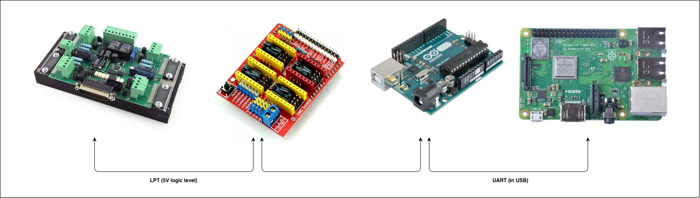

Мой первый фрезерный станок с ЧПУ
Осмотр станка
14 августа 2020 года я купил свой первый станок. До этого его использовал мой знакомый для раскроя листовых материалах в хоббийных целях. Станок + доставка + самодельный шпиндель мне обошлись в 27 тысяч рублей – что считаю очень выгодной покупкой для станка с такими характеристиками.

Это старая версия CM-1500 от российской компании Cutmaster.
Станок имеет рабочую зону 1000x500x75, что удовлетворяте моим потребностям. Перемещение по осям XY выполнены на зубчатой передаче, а перемещения по оси Z – на ШВП.
Обзор станка Cutmaster CM1500:
Станок оснащен комбинированным драйвером двигетелей с LPT портом и предназначен для уплавления из Mach3 / LinuxCNC.

После вскрытия задней крышки станка, можно увидеть драйвер и блок питания:

Драйвер двигателей – PLC330 производит тоже российская компания – Purelogic.
Судя по документации это неплохой драйвер для 4х шаговых двигателей. Он имеет встроенные цепи защиты от КЗ обмоток ШД, от эффекта обратной ЭДС от ШД. Многоканальный драйвер поддерживает управление частотным преобразователем от ШИМ сигнала программы управления и имеет встроенный регулируемый таймер для управления помпой СОЖ. Модуль имеет 5 входов для подключения концевых выключателей или кнопки E-STOP.
В партии станков на этих контроллерах использовались бракованные оптопары из-за чего станок мог пропускать шаги, подробнее на этом видео.
На портале станка располагается корпус для электроники из ПВХ профиля для проводки.

Высота профиля 150мм, тогда как портала 120мм, получается этот профиль съедает 30мм по оси Z! А также в нем огромное количество отверстий и пыли. Поэтому резать изделия из углеткани на этом станке невозможно – электроника просто сгорит от КЗ.
Модернизация станка
Контроллер станка
Использовать станок в такой компановке я не захотел, в первую очередь ввиду использования отдельного компьютера в качестве управляющего контроллера. Мне кажется эта эпоха давно прошла и управлять станком должен маленький контроллер (внутри станка) на вход которого подается Gcode. Для этого я опредилил для себя следующую схему:

У этого подхода есть несколько неоспоримых плюсов:
- Контроллер не может зависнуть ввиду многозадачности как компьютер, а значит отсуствует вероятность пропуска по причине зависания компьютера. И весь геморой по настройке компьютера под эту среду.
- Убирается огромный и ненужный кусок железа в виде системного блока и монитора.
- Управление производится через веб-интерфейс в браузере через Wi-Fi или интернет.
Я выбрал контроллер станка на базе 8-битного МК (Arduino UNO), тк считаю, что мне хватит его частоты для коммутирования обмоток двигателей (даже с учетом возможного использования микрошагов на PLC330), в коде прошивки для фрезера отсуствуют сложные алгоритмы, а значит не нужен большой объём flash-памяти, ну и в заключение мне не нужно использовать флешкарту для хранения управляющей программы, а значит мне подходит Arduino UNO по количеству портов.
В любом случае, замена Arduino Uno с CNC shield, на ту же Arduino Mega с шилдом RAMPS и более прикольной прошивкой Marlin – не составит труда в будущем.
Продолжение следует… Скоро эта статья будет обновлена.